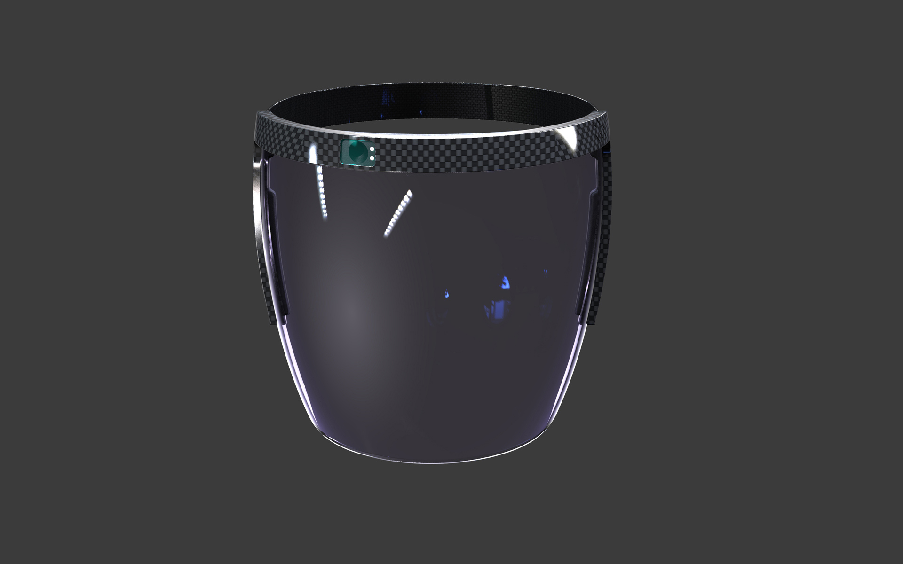

German Bionic Cray Visor
German Bionic Cray-Visier
The smart Cray Visor: protection and performance
Combined with the Cray X power suit, the all-new smart Cray Visor brings the benefits of industrial IoT
and Smart Factory integration directly into the wearers line of view on the head-up display, without the
actual tasks to lose sight of.
The wireless connection between the Cray X, the German Bionic IO cloud-based IoT suite and the Cray
Visor itself, allows instructions and other useful information to be displayed on the visor screen. In
addition, the Cray Visor protects the wearer from health risks that can be transmitted via the air.
Das smarte Cray Visier: Schutz und Performance
Kombiniert mit dem Cray X aus dem gleichen Haus bringt das neue intelligente Cray Visor, ein
Gesichts-Visier mit integriertem Head-Up-Display, die Vorteile der industriellen IoT- und Smart
Factory-Integration direkt in die Blickrichtung des Trägers, ohne die eigentlichen Aufgaben aus den Augen
zu verlieren.
Die drahtlose Verbindung zwischen Cray X, der Cloud-Plattform German Bionic IO und dem Cray Visor
ermöglicht die Einblendung von Handlungsanweisungen und anderen wichtigen Informationen auf dem Visier.
Darüber hinaus schützt das Cray Visor den Träger vor Gesundheitsgefahren, die über die Luft übertragen
werden können.

Images © Selić Industriedesign